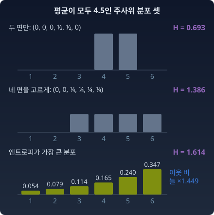
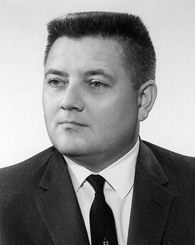

분류 모델의 마지막 층은 확률을 곧바로 내놓지 않는다. 로짓이라는 숫자를 내놓고, 소프트맥스나 시그모이드가 그것을 확률로 바꾼다. 개수를 맞히는 모델은 평균 대신 그 로그를 내놓곤 한다. 확률이 필요한데 왜 모델은 늘 다른 숫자를 거쳐 갈까?
한편 볼록함수 F가 있으면 그 기울기를 새 좌표로 삼을 수 있었다. 기울기로 맞물린 짝에서는 F와 그 쌍대 F*(F가 정해지면 따라 정해지는 짝 함수)의 합이 두 좌표의 곱이 된다.
두 이야기를 나란히 놓고 물어 보자. 확률분포를 정하는 숫자, 곧 모수(분포를 정하는 숫자)에도 이런 볼록함수가 딸려 있을까? 있다면 로짓 같은 숫자와 확률 같은 숫자는 그 함수의 무엇일까?
지수족: 네 부품으로 짜인 분포의 가족
베르누이, 푸아송, 가우시안. 동전, 한 시간에 걸려 오는 전화 수, 키의 분포. 이것들은 세상에서 하는 일이 전혀 다르다. 그런데 수학자들은 이 셋을 같은 가족이라고 부른다. 어디가 같다는 걸까?
레고 — 뒤집어 보면 같은 결합부
성, 우주선, 자동차. 겉모양은 완전히 다르다. 그런데 뒤집어 보면 결합부가 같다. 같은 돌기와 홈. 같은 규격.
분포도 그렇다. 겉모양(종 모양, 계단 모양, L자 모양)은 다르지만 뒤집어 보면 같은 규칙으로 끼워져 있다. 무엇이 끼워져 있는지는 가장 단순한 분포부터 뒤집어 보면 보인다.
손으로 한 번 — 베르누이
동전 던지기를 먼저 고르는 까닭은 결과가 앞면과 뒷면 둘뿐이라 더할 것이 두 항밖에 없기 때문이다. 앞면 확률이 μ이면 p(x) = μˣ(1 − μ)¹⁻ˣ (x는 0 또는 1)이다. 앞면 확률을 p 나 θ 가 아니라 μ 로 적는 것은, 여기서 p 는 분포 전체를 가리키고 θ 는 곧 새로 만날 다른 좌표의 몫이기 때문이다. 앞면 확률은 x 의 평균이기도 해서, 평균에 흔히 쓰는 μ 를 골랐다. 로그를 씌워 x에 대해 정리한다.
μx(1−μ)1−x=exp(xlog1−μμ+log(1−μ))
μx앞면확률 (익숙한모수)던진결과, 앞면 1 ⋅ 뒷면 0
μ = 0.3 이면 지수 안에 두 수가 나온다. x에 곱해진 수 log(0.3/0.7) = −0.847 과, x와 상관없는 수 log 0.7 = −0.357 이다. 앞면이면 exp(−0.847 − 0.357) = 0.3, 뒷면이면 exp(−0.357) = 0.7. 동전 하나의 모양이 이 두 수로 다 정해진다. 앞의 수는 앞면 대 뒷면 확률 비의 로그, 곧 로그 오즈이고, 기계학습에서는 로짓이라고 부른다. 뒤의 수는 앞의 수가 정해지면 따라 정해진다. 두 확률의 합이 1이어야 하기 때문이다.
이 두 수에 이름을 붙이면 다른 분포에도 그대로 쓸 수 있다. x에 곱해지는 수를 θ, 데이터에서 그 수와 곱해지는 몫을 t(x), 합을 1로 맞추려고 빼는 수를 F(θ)라 하고, θ와 상관없이 x마다 붙는 몫을 k(x)라 하자.
푸아송의 캐리어를 보라. λˣexp(−λ)/x! 에서 1/x! 은 θ와 아무 상관 없이 x마다 붙는다. 이것을 빼먹고 exp(θx − eᶿ)만 쓰면 확률의 합이 1이 아니라 무한대로 간다. 그러니 "θ, t, F만 바꿔 끼우면 전부 나온다"는 말은 반만 맞다. 부품은 넷이다.
네 부품의 골격이 편리하다는 것은 알겠다. 그런데 동전, 전화 수, 키처럼 하는 일이 전혀 다른 분포들이 왜 하필 이 꼴로 모일까?
주사위를 아주 많이 던졌는데 기록은 사라지고 「평균이 4.5였다」는 말만 남았다고 하자. 공정한 주사위라면 3.5였을 것이다. 다음에 던질 때 각 면의 확률을 얼마로 매겨야 할까? 평균이 4.5인 분포는 셀 수 없이 많다. (0, 0, 0, ½, ½, 0)도 평균이 4.5이고, (0, 0, ¼, ¼, ¼, ¼)도 그렇다. 앞의 것은 1·2·3·6이 절대 안 나온다고, 뒤의 것은 1과 2가 절대 안 나온다고 우긴다. 들은 것은 평균 하나뿐인데 그런 말까지 보태도 될까?
들은 것 말고는 아무것도 보태지 않으려면, 평균 4.5를 지키면서 가장 고르게 퍼진 분포를 골라야 한다. 고른 정도는 엔트로피 H = −Σ p log p 로 잰다. 엔트로피는 분포가 얼마나 고르게 퍼졌는지, 곧 결과를 얼마나 모르는지를 재는 양이다. 앞의 두 후보는 H가 log 2 = 0.693, log 4 = 1.386 이다. 평균 4.5를 지키면서 H를 가장 크게 하는 분포를 수치로 찾으면 (0.054, 0.079, 0.114, 0.165, 0.240, 0.347)이 나오고, H = 1.614 다. 공정한 주사위의 log 6 = 1.792 보다는 작다. 평균 조건이 그만큼을 깎은 것이다.

평균이 4.5인 주사위 분포 셋: 두 면만 쓰는 분포(H = 0.693), 네 면을 고르게 쓰는 분포(H = 1.386), 엔트로피가 가장 큰 분포(H = 1.614). 가장 큰 분포는 이웃한 면의 확률 비가 늘 1.449다
숫자를 보면 이웃한 두 면의 확률 비가 늘 같다. 0.079/0.054, 0.114/0.079, … 가 모두 1.449다. 비가 일정하다는 것은 로그를 씌우면 눈 x에 대해 직선이라는 뜻이다.
지수족의 골격 그대로다. 평균을 정해 둔 양 x가 t(x) 자리에, 이웃 비의 로그 0.371이 θ 자리에, 분모의 로그가 F(θ) 자리에 앉는다. 평균 대신 x와 x²의 평균을 함께 정해 두고 같은 일을 하면 가우시안이 나온다. 제약을 목적식에 더할 때 곱하는 계수(라그랑주 승수)를 써서 풀면, 제약 하나마다 곱해지는 계수가 θ의 성분 하나가 된다. 「전해 들은 평균만 지키고 나머지는 가장 고르게」라는 이 원칙을 최대 엔트로피 원리라 부른다. 지수족은 그 원칙이 내놓는 답의 모양이다. 이 주사위 물음은 아래 이야기의 주인공이 1962년 강의에서 든 예다.
수확
“지수족 = 같은 골격(θ, t(x), F, k)을 공유하는 분포의 가족. 표준 꼴(정준형): p(x) = exp(θ·t(x) − F(θ) + k(x)).”
“t(x)의 평균만 정해 두고 나머지를 가장 고르게 퍼뜨리면 이 골격이 나온다. θ는 그때 제약마다 붙는 계수다.”
인물 이야기 — 제인스와 “확률은 논리다”

E.T. Jaynes
1957년, 스탠퍼드 대학교의 삼십 대 중반 물리학자 에드윈 톰프슨 제인스(Edwin Thompson Jaynes)가 Physical Review에 「정보 이론과 통계역학(Information Theory and Statistical Mechanics)」이라는 논문을 두 편으로 나눠 실었다. 이 논문이 던진 질문은 도발적이었다.
통계역학의 기초는 무엇인가? 볼츠만(Boltzmann) 이래로 기체 분자의 에너지 분포는 역학으로 설명했다. 분자들이 충돌하고 튕기는 과정의 결과로 맥스웰-볼츠만 분포가 나온다는 것이다. 그 설명에는 에르고딕 가설, 분자 혼돈 가설 같은 물리적 가정이 따라붙었다.
제인스의 답은 방향이 달랐다. 물리가 아니라 추론이다. 에너지의 평균값만 알고 나머지는 모를 때 가장 치우치지 않은 추측을 하려면, 평균만 지키고 엔트로피를 가장 크게 하는 분포를 골라야 한다. 그 답이 바로 볼츠만 분포다. 평균만 전해 들은 주사위에 한 일을 분자에 한 것이다. 에너지에 곱해지는 계수(역온도에 마이너스를 붙인 값)가 자연모수 θ 자리에 앉는다.
논문은 심사자 한 사람의 반대를 넘어 실렸다. 제인스는 그 심사평을 액자에 넣어 40년 넘게 연구실 벽에 걸어 두었다고, 그와 함께 연구한 브레트호스트(G. Larry Bretthorst)가 쓴 전기에 적혀 있다. 확률을 되풀이의 빈도가 아니라 지식 상태의 표현으로 보는 그의 관점은 그 뒤로도 오래 논쟁거리였다.
1960년, 그는 세인트루이스의 워싱턴 대학교로 자리를 옮겨 남은 생을 그곳에서 보냈다. 생전에 완성하지 못한 책 Probability Theory: The Logic of Science는 1998년 그가 세상을 떠난 뒤 브레트호스트가 원고를 정리해 2003년에 나왔다. 부제가 말하듯 이 책은 확률론을 논리의 확장으로 세운다. 그 주장은 지금도 논란의 대상이지만, 최대 엔트로피 원리 자체는 기계학습, 통계물리학, 정보기하학의 교차점에서 살아 있다.
볼츠만의 엔트로피와 섀넌(Shannon)의 엔트로피는 같은 꼴의 식이다. 제인스는 그것이 우연이 아님을 명시적으로 보여 준 사람이다. 그리고 그 연결의 매듭이 바로 이 장의 주인공, 지수족이다.
문제 1. 평균만 전해 들은 주사위
위 주사위처럼 평균만 전해 들었다. 평균을 지키면서 엔트로피가 가장 큰 분포를 구하고, 이웃한 두 면의 확률 비와 θ를 적어라. (가) 평균이 3.5 (나) 평균이 2.5 — 새로 계산하지 말고 평균 4.5의 답에서 구하라 (다) 평균이 6
함께 풀기
김민준
(가)는 공정한 주사위 평균이니까 1/6씩 고르게요. 이웃 비는 1, θ = 0 이에요.
이서연
(나)는 눈을 뒤집으면 돼. 눈 x를 7 − x로 바꾸면 평균 2.5가 4.5로 바뀌니까, 4.5의 답을 거꾸로 읽으면 (0.347, 0.240, 0.165, 0.114, 0.079, 0.054). 이웃 비는 1/1.449 = 0.690, θ = −0.371.
선생님
(다)는요?
김민준
큰 눈 쪽으로 더 쏠리게 θ를 키우면 되죠. 돌려 보니 평균 5.9면 이웃 비가 11, 5.99면 101이에요. 6이 되려면 θ를 한 100쯤 넣으면…
선생님
평균이 정확히 6인 분포는 어떻게 생겼어요?
이서연
던질 때마다 6이어야 평균이 6이에요. 1부터 5까지는 확률 0, 답은 (0, 0, 0, 0, 0, 1) 하나뿐이에요. 그런데 exp(θx) 꼴은 θ가 아무리 커도 0을 못 만들어요. θ = 100이어도 5는 6보다 e¹⁰⁰배 드물 뿐이지 0은 아니에요.
선생님
그래요. 평균 6이면 고를 것도 없이 하나로 정해지는데, 그 하나는 θ를 끝없이 키울 때 다가가기만 하는 가족의 가장자리 너머에 있어요.
김민준
과제 평균이 만점이라는 말만 들으면 모두 만점이었다는 뜻이라 고르게 퍼뜨릴 여지가 없는 거네요.
문제 2. 푸아송의 네 번째 부품
푸아송 분포 p(x) = λˣexp(−λ)/x! 를 정준형 exp(θ·t(x) − F(θ) + k(x)) 로 쓰고 네 부품을 밝혀라. 캐리어를 빼고 λ = 0.5 에서 확률을 x = 0부터 59까지 더하면 얼마인가? 모자라거나 남는 만큼 다시 나눠 합을 1로 맞추면 푸아송이 되는가? (위 위젯의 푸아송 카드에서 평균 λ를 0.5로 놓고 「캐리어 빼 보기」를 눌러 합을 확인할 수 있다.)
1.213 이요… 확률의 합이요? x! 을 빼먹었어요. 그런데 λ = 3 일 때처럼 끝없이 커지지는 않네요. 0.5ˣ 은 줄어드니까요.
이서연
유한하면 괜찮은 거 아냐? 1.213 으로 한 번 더 나누면 합이 1이 되잖아.
선생님
그렇게 나눈 분포의 x = 0, 1, 2 확률을 푸아송과 견줘 봐요.
이서연
0.5, 0.25, 0.125 예요. 푸아송은 0.607, 0.303, 0.076 이고요. 하나 늘 때마다 반씩 줄어드는 다른 분포예요. λ가 1 이상이면 나눌 합부터 끝없이 커지고요. 그럼 x! 은 어디에 넣지? x! 은 θ랑 상관없으니까 F에 넣으면 되지 않아? F(θ) = eᶿ + log x! 이렇게.
선생님
서연 학생, F는 무엇의 함수여야 하죠?
이서연
θ만의 함수요. 전체 확률을 1로 맞추는, θ마다 숫자 하나인 균형추니까… log x! 을 넣으면 x마다 균형추가 달라져요. 그건 균형추가 아니에요.
이서연
그래서 x에만 의존하는 조각은 따로 k(x) 자리가 있는 거네요. 그 자리를 비우면 가족 자체가 다른 가족으로 바뀌고요.
선생님
맞아요. 이 자리를 캐리어, 또는 기저측도라고 해요. θ가 무엇이든 x마다 깔려 있는 바탕 무게예요.
김민준
과제 채점표에서 기본 출석 점수는 과제 점수가 몇이든 따로 붙는 것 같은 거네요. 그걸 과제 점수 계산식에 넣으면 식이 꼬여요.
문제 3. 로짓에 같은 수를 더하면
소프트맥스는 로짓 (θ₁, θ₂, θ₃)을 확률 pᵢ = exp(θᵢ) / Σⱼ exp(θⱼ) 로 바꾼다. (가) 결과가 셋인 이 분포를 네 부품으로 써라. t(x)는 뽑힌 칸만 1인 원-핫 벡터로 잡는다. (나) 로짓 (2, 1, 0)과 (1002, 1001, 1000)이 주는 확률과 F 값을 구하라. (다) numpy 로 (나)의 두 번째를 식 그대로 계산하면 무슨 일이 생기고, 어떻게 피하는가?
(나) 첫째는 (0.665, 0.245, 0.090), F = 2.408 이에요. 둘째는 로짓이 훨씬 크니까 확률도 한쪽으로 확 쏠리겠죠. 돌려 볼게요… nan 이 나와요. F는 inf 고요.
선생님
e¹⁰⁰⁰ 은 얼마예요?
김민준
float64 가 담는 가장 큰 수가 1.8 × 10³⁰⁸ 쯤이라 e⁷⁰⁹ 근처까지만 돼요. e¹⁰⁰⁰ 은 inf, inf 를 inf 로 나누면 nan. 식이 아니라 컴퓨터가 수를 못 담은 거예요.
선생님
손으로는요? 분자와 분모를 e¹⁰⁰⁰ 으로 나눠 봐요.
이서연
e¹⁰⁰⁰ 이 약분돼서 확률은 (0.665, 0.245, 0.090) 그대로야. 쏠리지 않아. F만 정확히 1000 커져서 1002.408. 로짓 세 개에 같은 수를 더하면 θ·t(x)도 그만큼, F도 그만큼 커져서 서로 지워져. 한 분포에 로짓이 하나가 아니라 직선 하나만큼 있는 거야.
김민준
그래서 (다)는 로짓에서 가장 큰 값을 먼저 빼면 되네요. 빼도 분포는 그대로니까 (0, −1, −2)로 계산하고, F에는 뺀 1000을 도로 더하고요. 라이브러리의 logsumexp 가 하는 일이 이거였어요.
선생님
그래요. 그래서 이 가족을 지수족으로 쓸 때는 한 칸의 로짓을 0으로 묶어 두기도 해요. 칸이 셋이면 자연모수는 둘이면 충분해요. 칸이 둘인 베르누이의 로짓이 하나였던 것처럼요.
이서연
사영기하에서 동차좌표 (1, 2, 1)과 (2, 4, 2)가 같은 점인 것 같아. 여기서는 곱하는 대신 더하는 거고.